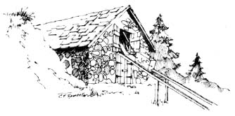

Your article on icehouses in MOTHER NO. 17 reminded me of the way we used to make ice up in Lake-of-the-Woods.
First off, our Minnesota icehouse had its door several feet off the ground, so that you needed a ladder to get in. (Cold air flows down . . . entrances that reach all the way to the ground tend to let out all that good chill.) The building was doublewalled with sawdust as insulation, but I suppose hay, straw or rock wool would do as well.
To make ice, we used to wait until January when it was good and cold (-20° Fahrenheit). Then we spread a sheet of polyethylene plastic in the bottom and up the sides of the building. Next, we just laid pipe or hose from the lake and pumped in about a foot of water. (Didn't matter if there were a few small holes in the plastic . . . at 20 below the water froze before it could leak out.) When the ice was good and solid, we laid on another sheet of plastic and pumped in more water . . . and so on until we were within a foot of the building's top. Finally, we covered the whole frozen mass with 12 inches of sawdust.
Then, when we needed ice in the summer, we just shoveled aside the sawdust covering and scored the ice with a saw. A few quick blows with an axe and we had our block . . . after which we scooped the insulation back into place.
The plastic kept the levels of ice from freezing together, and could be peeled off (and saved for reuse the next winter) when we were done with a layer.
Some very important points to remember about icehouses:
[1] Ice blocks freeze together even in hot weather. (Just try squeezing two ice cubes against each other and watch them join up.)
[2] Rainwater ruins ice . . . make double sure your icehouse roof is waterproof or you could have a very hot summer.
[3] Don't build an icehouse in the sun! Nuff said.
Keith Klein
St. Paul, Minn.
Icehouses, of course, weren't built the same way in all parts of the country. After seeing one that was typical of this area and getting some reliable descriptions from an old-timer, I think I have a pretty good picture of how they constructed the buildings around here.
In this region, icehouses were built so that everything but the roof was underground. A cylindrical hole was dug in the earth, possibly 10 feet deep and 25 feet in diameter in the case of the structure I saw (unfortunately I didn't measure . . . and I didn't see the floor, so I don't know whether it was earth or stone). This hole was walled up around the sides with field stone, Then a rather steep conical roof (with a door) was built over it, so that from the outside all one could see was this top part apparently sitting on the ground. I assume that there was a drain to take care of the melt . . . one could easily have been run out of the building I looked at, since it was located at the beginning of a slope.
When ice-harvesting time came, one would put a layer of straw on the floor, then a layer of ice a few feet thick . . . and so on in alternating tiers until the "well" was full, or nearly so. Then the ice was covered with straw.
Why the straw between the layers? Because under pressure ice tends to melt, and then freeze together if there is a slight heat transfer. The owners surely didn't want the whole business to become one big slid iceberg.
It immediately struck me that the builders missed a good thing when they failed to insulate the roof. I've heard the complaint that such icehouses seldom kept ice until the next winter . . . and since the ground is a fair insulator, I imagine that most of the heat conduction came through that simple pine-shingle covering.
C.D. Prewitt
Mt. Sterling, Ky.
|
 |
|
|